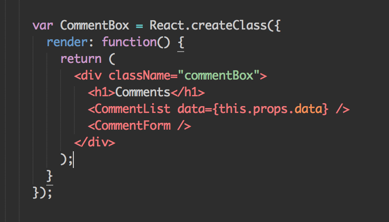

Fear not the unknown!
and just keep learnin'
Jesse Hixson / @jhixson
“Real knowledge is to know the
extent of one's ignorance.”
My development journey
Angular.js

You got directives in my markup!
Let's give it a shot...
React

JSX?

Let's give it a shot...

So, it turns out...
They're all awesome!
But...
What's worth learning?
Cost of learning
vs.
Benefit of new knowledge?
Time spent learning
vs.
Future time saved?
To sum up:
- There's a million ways to do everything
- There's no way to learn everything
- There's no guarantee that what you
learn will be useful to you ...ever